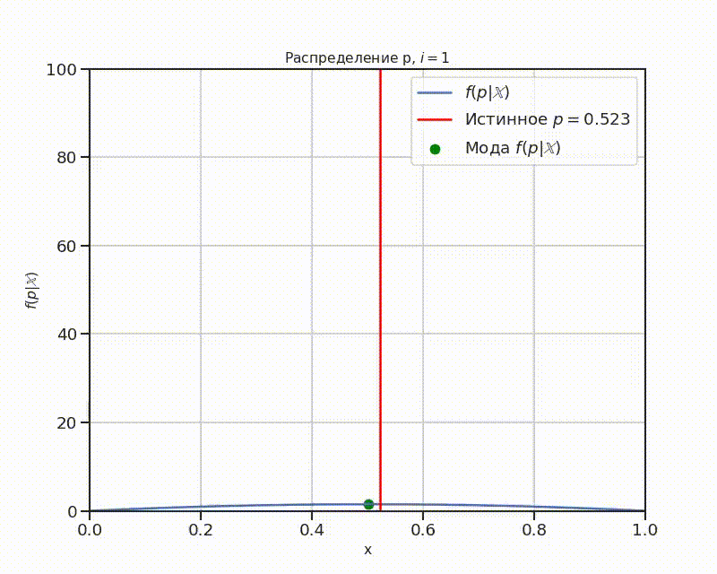

Немного про Байесовскую статистику
Задача
Представим, что у нас есть монета, честность которой нам неизвестна (если быть точным, мы не знаем с каким шансом выпадает орёл, с каким — решка). Поэтому мы бы хотели оценить вероятность \(p\) — шанс выпадения орла1.
В классической статистике эта задача бы решалась бы так:
- Монета подбрасывается \(n\) раз.
- Из них \(m\) — количество выпавших орлов.
- Отношение \(\frac{m}{n}\) будет оценкой \(p\).
В Байесовской статистике подход иной:
- Обозначим монету как бернуллевскую случайную величину \(\xi\) с параметром \(\theta\), у которой \(1\) — это выпадение орла, \(0\) — решки.
- Предполагается априорное распределение \(\pi(\theta)\) (т.е. распределение, которое мы предполагаем, исходя из того, что нам известно о параметре \(\theta\)), как правило, это равномерное распределение \(U \left(0,1\right)\).
- Монета подбрасывается.
- Распределение \(\theta\) уточняется по формуле2: $$\Large \pi(\theta | \xi) = \frac{p(\xi|\theta)p(\theta)} {\int\limits_{\Theta}p(\xi|\theta)p(\theta)d\theta} $$
- Повторить пункты 2-4, предполагая \(\pi(\theta) = \pi(\theta|\xi)\)
Тогда оценкой \(\theta\) будет: $$\Large \hat \theta = \arg \max_\theta \pi ( \theta | \xi ) $$
Иначе говоря, мода апостериорного распределения.
Мы, в качестве априорного распределения, взяли Бета-распределения \(Beta(2,2)\). В таком случае, если на \(i\)-ом шаге мы имеем: $$\Large \theta \sim Beta \left( \alpha_i, \beta_i \right) $$
то апостериорное распределение будет:
Тогда не нужно интегрировать на каждом шаге, что существенно упрощает вычисления.
Решение
Приведем решение на python.
Библиотеки
Сначала нужно импортировать и настроить библиотеки:
import numpy as np
import pandas as pd
import matplotlib.pyplot as plt
import seaborn as sns
from tqdm import tqdm
plt.rcParams.update({'font.size': 14})
Константы и функции
Обозначим константы:
p— истинная вероятность выпадения орла.NMODEL— количество бросков монеты.
p = 0.523
NMODEL = 7501
Введем функции:
- beta — объект для Бета-распределения
- coin — функция одиночного броска монеты
from scipy.stats import beta
coin = lambda: np.random.binomial(n=1, p=p)
Моделирование
В качестве априорного распределения тут используется Бета-распределение \(Beta(2,2)\). Это сделано потому, что расчет моды накладывает ограничение, что оба параметра должны быть строго больше 1.
Мода расчитывается по формуле:
alphas = np.zeros(NMODEL)
betas = np.zeros(NMODEL)
alphas[0], betas[0] = 2,2
for i in tqdm(range(1, NMODEL)):
A = coin()
if A == 0:
betas[i] = 1
else:
alphas[i] = 1
betas = np.cumsum(betas)
alphas = np.cumsum(alphas)
Es = (alphas - 1) / (alphas + betas - 2)
График
Мода
Построим график зависимости моды от количества бросков.
fig, ax = plt.subplots(1, 1, figsize=(10,8), dpi=80)
sns.lineplot(x=np.arange(NMODEL),
y=Es,
ax=ax,
label=r"arg$\max_p \; f(p|\mathbb{X})$", )
sns.lineplot(x=np.arange(NMODEL),
y=p,
ax=ax,
label=r"Истинное $p = {:.3f}$".format(p))
ax.grid()
ax.set(ylabel=r"$E(p|\mathbb{X})$", xlabel=r"$i$");

Гифка
Сделаем гифку на тему. Сначала нужно импортировать библиотеку imageio и зададим
шаг STEP (так как, потом нужно будет сохранять каждый график в опертивной
памяти, что проблематично при большом NMODEL):
import imageio
STEP = NMODEL//150
После, создадим список функций плотности вероятности:
pi = []
for i in tqdm(range(0, NMODEL)):
pi.append(beta(alphas[i], betas[i]))
И по ним сделаем gif-изображение:
def create_frame(i):
fig, ax = plt.subplots(1, 1, figsize=(10,8), dpi=80)
x = np.linspace(0,1,500)
y = pi[i].pdf(x)
i_max = np.argmax(y)
x_max = x[i_max]
y_max = y[i_max]
ax.grid()
ax.plot(x,y, label=r"$f(p|\mathbb{X})$")
ax.axvline(x = p, color = 'red', label = f"Истинное $p={p}$")
plt.scatter([x_max],
[y_max],
color="green",
marker="o",
label=r"Мода $f(p|\mathbb{X})$")
plt.xlim([0,1])
plt.xlabel('x', fontsize = 14)
plt.ylim([0,100])
plt.ylabel(r'$f(p|\mathbb{X})$', fontsize = 14)
plt.title(r'Распределение p, $i={}$'.format(i+1),
fontsize=14)
ax.legend()
plt.savefig(f'./img/img_{i:04d}.png',
transparent = False,
facecolor = 'white'
)
plt.close()
for i in tqdm(range(0, NMODEL, STEP)):
create_frame(i)
frames = []
for i in tqdm(range(0, NMODEL, STEP)):
image = imageio.v2.imread(f'./img/img_{i:04d}.png')
frames.append(image)
imageio.mimsave('./distributions.gif',
frames,
fps = 30)
Результат:
